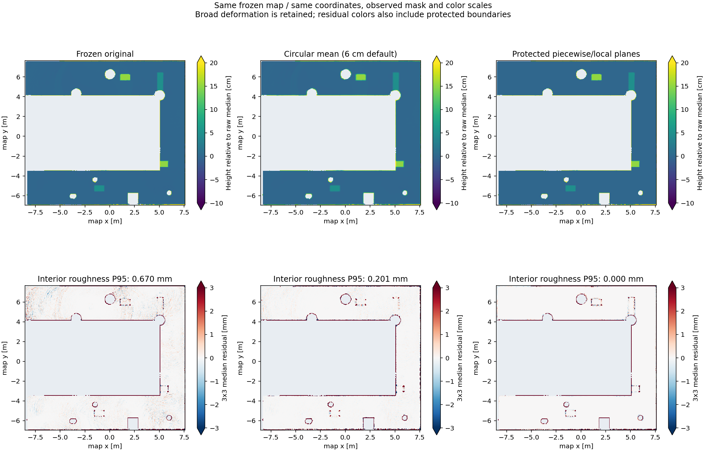
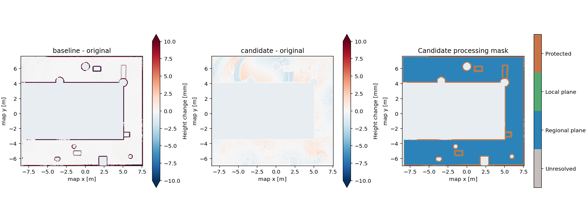

RUBI · offline comparison · experimental 0.1.0
잔노이즈와 단차 경계의 후처리 비교
입력 원본은 변경하지 않았습니다. 원본·기본 필터·평면 기반 결과 모두 같은 XY, 해상도, 관측 셀을 사용합니다. 이 보고서는 자동 보행 적합 판정이 아닌 후처리 비교입니다.
바닥 내부의 작은 편차
통계는 원본에서 정한 경계 제외 영역을 모든 방법에 동일하게 적용했습니다. 이전 보고서의 전체 3×3 관측 영역 P95 4.1 mm와 평가 마스크가 다릅니다. 값이 작아져도 전체 바닥의 절대 정확도가 좋아졌다는 뜻은 아닙니다.
| 방법 | 국소 잔차 P95 [mm] | 변경 셀 (>1 µm) | 최대 변경 [mm] | 보호 영역 변경 셀 |
|---|
| raw | 0.670 | 0 | 0.000 | 0 |
| baseline | 0.201 | 51330 | 257.001 | 6853 |
| candidate | 0.000 | 44865 | 5.153 | 0 |

어디를 어떻게 바꿨는지

평면에 잘 맞는 연결 영역은 해당 평면으로 보정했습니다. 큰 영역이 단일 평면 검사에 실패하면 작은 이웃 평면으로 제한된 노이즈 완화만 수행했습니다. 모든 candidate 변경은 설정된 최대 변경량 이내이며 보호된 경계·미관측 영역은 그대로입니다. 보호 영역에는 잡음이 남을 수 있습니다.
baseline은 grid_map의 MeanInRadiusFilter에 해당하는 원형 평균과 원본 관측 마스크 복원을 사용합니다. 전체 inpainting 체인이나 ETH convex_plane_decomposition을 실행한 결과는 아닙니다. candidate는 이번에 구현한 독립적인 평면 기반 필터입니다.
고정 ROI의 단차와 평면 비교
단차는 주변 바닥 평면 대비 내부 중앙 높이입니다. 바닥 지표는 선택한 영역 자체에 맞춘 평면의 잔차입니다. 정답 world와 정밀 정합한 RMSE가 아니며 ROI 선택은 qc_regions.json에 보존했습니다.
남아 있는 넓은 높이 변화
잔노이즈와 넓은 휨은 별개입니다. 호 형태나 완만한 높이 변화는 이번 제한된 후처리로 평평하게 만들지 않았습니다. 실제 경사와 누적 자세 오차를 구분하려면 원본 점군·궤적 또는 확인된 평면 영역이 추가로 필요합니다. 입력은 world 정답을 이용하지 않았습니다.
저장 결과와 재현
candidate/map.rghm · candidate/surface.pcd · 전체 지표·파라미터·해시 · 레이어 배열
처리본의 분산과 시각은 원본 값을 보존한 출처 정보입니다. 수정한 높이의 오차 분산을 새로 검증한 값은 아닙니다. metrics.json과 레이어 마스크를 함께 보관하십시오.
원본: /home/kim/Documents/ChatGPT/RCLab RUBI Height Map Based Navigation/live_analysis/edge_review_20261014/input/map.rghm